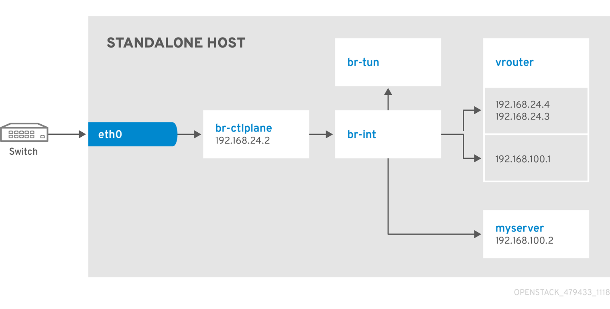
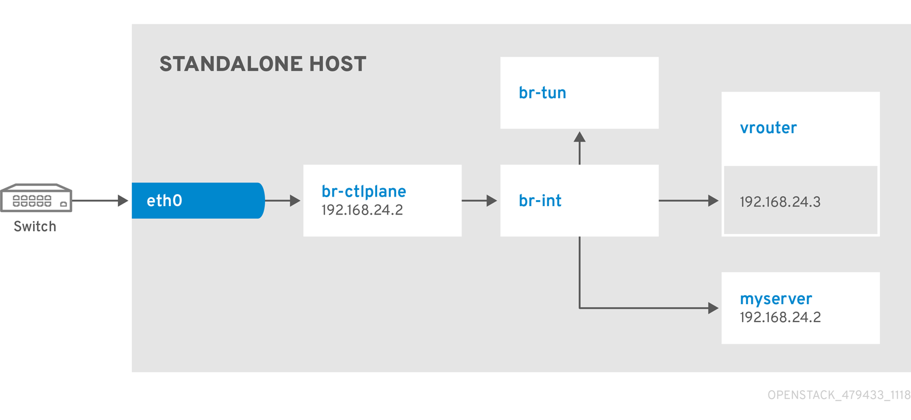
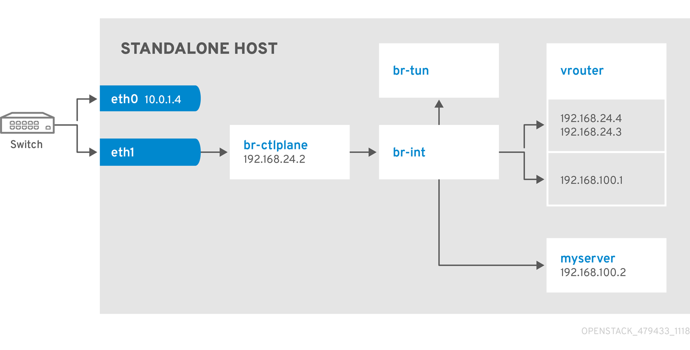

Quick Start Guide
Creating an all-in-one OpenStack cloud for test and proof-of-concept environments
Abstract
Preface
This feature is available in this release as a Technology Preview, and therefore is not fully supported by Red Hat. It should only be used for testing, and should not be deployed in a production environment. For more information about Technology Preview features, see Scope of Coverage Details.
Chapter 1. All-in-one Red Hat OpenStack Platform installation
The all-in-one installation method uses TripleO to deploy Red Hat OpenStack Platform and related services with a simple, single-node environment. Use this installation to enable proof-of-concept, development, and test deployments on a single node with limited or no follow-up operations.
1.1. Prerequisites
Your system must have two network interfaces and a base operating system installed.
Example network configuration
-
Interface
eth0assigned to thedefaultnetwork 192.168.122.0/24 -
Interface
eth1assigned to themanagementnetwork 192.168.25.0/24
Chapter 2. Overview of the all-in-one Red Hat OpenStack Platform environment
This section contains information about installing, configuring, and deploying a simple, single-node Red Hat OpenStack Platform environment. In this scenario, there is no pre-existing undercloud dependency. Instead, the installer runs an inline heat-all instance to bootstrap the deployment process and convert the selected heat templates into Ansible playbooks that you can execute on a local machine.
Use the all-in-one installation for basic testing and development. The all-in-one installation is a good starting point and test environment for Red Hat OpenStack Platform, but if you want to perform complex operations, you must deploy a production-level scaled cloud.
Workflow
To install, configure, and deploy a simple, single-node Red Hat OpenStack Platform environment, complete the tasks in the following basic workflow:
- Prepare your environment.
- Install packages for the all-in-one environment.
- Configure the all-in-one environment.
- Deploy the all-in-one environment.
Benefits of the all-in-one installation
- Composable services.
- Pre-defined roles.
- Condensed single-node environment.
- Playbooks that you can use to run the small-footprint installer in a container and generate Ansible playbooks.
Configuration
If you want to experiment with configuring roles and services, see Chapter 8, Working with custom roles and services and Section 7.1, “Core heat templates”.
Composable roles
You can create custom composable roles and deploy specific services for each role.
Ansible
This installation applies Ansible playbooks automatically with the deployment command. You can also direct the deployment command to output Ansible playbooks that you can use on other instances. For example, you can complete testing in the all-in-one installation, and then apply the verified Ansible playbook to other instances.
Chapter 3. Installing the all-in-one Red Hat OpenStack Platform environment
Before you can begin configuring, deploying, and testing your all-in-one environment, you must configure a non-root user and install the necessary packages and dependencies:
Create a non-root user on the all-in-one host:
[root@all-in-one]# useradd stack
Set the password for the
stackuser:[root@all-in-one]# passwd stack
Disable password requirements when using
sudoas thestackuser:[root@all-in-one]# echo "stack ALL=(root) NOPASSWD:ALL" | tee -a /etc/sudoers.d/stack [root@all-in-one]# chmod 0440 /etc/sudoers.d/stack
Log in as the non-root user on the all-in-one host:
$ ssh stack@<all-in-one>
Register the machine with Red Hat Subscription Manager. Enter your Red Hat subscription credentials at the prompt:
[stack@all-in-one]$ sudo subscription-manager register
Attach your Red Hat subscription to the entitlement server:
[stack@all-in-one]$ sudo subscription-manager attach --auto
NoteThe
--autooption might not subscribe you to the correct subscription pool. Ensure that you subscribe to the correct pool, otherwise you might not be able to enable all of the repositories necessary for this installation. Use thesubscription-manager list --all --availablecommand to identify the correct pool ID.Lock the undercloud to Red Hat Enterprise Linux 8.2:
$ sudo subscription-manager release --set=8.2
Run the following commands to install
dnf-utils, disable all default repositories, and then enable the necessary repositories:[stack@all-in-one]$ sudo dnf install -y dnf-utils [stack@all-in-one]$ sudo subscription-manager repos --disable=* [stack@all-in-one]$ sudo subscription-manager repos \ --enable=rhel-8-for-x86_64-baseos-eus-rpms \ --enable=rhel-8-for-x86_64-appstream-eus-rpms \ --enable=rhel-8-for-x86_64-highavailability-eus-rpms \ --enable=ansible-2.9-for-rhel-8-x86_64-rpms \ --enable=openstack-16.1-for-rhel-8-x86_64-rpms \ --enable=fast-datapath-for-rhel-8-x86_64-rpms \ --enable=rhel-8-for-x86_64-highavailability-rpms
NoteThe all-in-one environment is a Technology Preview feature in Red Hat OpenStack Platform 16.
Install the TripleO command line interface (CLI):
[stack@all-in-one]$ sudo dnf install -y python3-tripleoclient
Chapter 4. Configuring the all-in-one Red Hat OpenStack Platform environment
You must create the following configuration files manually before you can deploy the all-in-one Red Hat OpenStack Platform environment:
-
$HOME/containers-prepare-parameters.yaml -
$HOME/standalone_parameters.yaml
If you want to customize the all-in-one environment for development or testing, edit the following configuration files:
-
/usr/share/openstack-tripleo-heat-templates/environments/standalone/standalone-tripleo.yaml -
/usr/share/openstack-tripleo-heat-templates/roles/Standalone.yaml
4.1. Generating YAML files for the all-in-one Red Hat OpenStack Platform environment
To generate the containers-prepare-parameters.yaml and standalone_parameters.yaml files, complete the following steps:
Generate the
containers-prepare-parameters.yamlfile that contains the defaultContainerImagePrepareparameters:[stack@all-in-one]$ openstack tripleo container image prepare default --output-env-file $HOME/containers-prepare-parameters.yaml
Edit the
containers-prepare-parameters.yamlfile and include your Red Hat credentials in theContainerImageRegistryCredentialsparameter so that the deployment process can authenticate with registry.redhat.io and pull container images successfully:ContainerImageRegistryCredentials: registry.redhat.io: <USERNAME>: "<PASSWORD>"NoteTo avoid entering your password in plain text, create a Red Hat Service Account. For more information, see Red Hat Container Registry Authentication:
Set the
ContainerImageRegistryLoginparameter totruein thecontainers-prepare-parameters.yaml:ContainerImageRegistryLogin: true
Create the
$HOME/standalone_parameters.yamlfile and configure basic parameters for your all-in-one Red Hat OpenStack Platform environment, including network configuration and some deployment options. In this example, network interfaceeth1is the interface on the management network that you use to deploy OpenStack.eth1has the IP address 192.168.25.2:[stack@all-in-one]$ export IP=192.168.25.2 [stack@all-in-one]$ export NETMASK=24 [stack@all-in-one]$ export INTERFACE=eth1 [stack@all-in-one]$ cat <<EOF > $HOME/standalone_parameters.yaml parameter_defaults: CloudName: $IP CloudDomain: <DOMAIN_NAME> ControlPlaneStaticRoutes: [] Debug: true DeploymentUser: $USER DnsServers: - 1.1.1.1 - 8.8.8.8 DockerInsecureRegistryAddress: - $IP:8787 NeutronPublicInterface: $INTERFACE NeutronDnsDomain: localdomain NeutronBridgeMappings: datacentre:br-ctlplane NeutronPhysicalBridge: br-ctlplane StandaloneEnableRoutedNetworks: false StandaloneHomeDir: $HOME StandaloneLocalMtu: 1500 EOFYou must configure the
DnsServersparameter with your DNS address. You can find this address in the/etc/resolv.conffile:[stack@all-in-one]$ cat /etc/resolv.conf 192.168.122.1
If you have an internal time source, or if your environment blocks access to external time sources, use the
NtpServerparameter to define the time source that you want to use:NtpServer: clock.example.com
If you want to use the all-in-one Red Hat OpenStack Platform installation in a virtual environment, you must define the virtualization type with the
StandaloneExtraConfigparameter:StandaloneExtraConfig: NovaComputeLibvirtType: qemu
The Load-balancing service (octavia) does not require that you configure SSH. However, if you want SSH access to the load-balancing instances (amphorae), add the
OctaviaAmphoraSshKeyFileparameter with a value of the absolute path to your public key file for the stack user. Here is an example:OctaviaAmphoraSshKeyFile: "/home/stack/.ssh/id_rsa.pub"
Chapter 5. Deploying the all-in-one Red Hat OpenStack Platform environment
Before you deploy your all-in-one Red Hat OpenStack Platform environment, ensure that your system is up to date:
[stack@all-in-one]$ sudo dnf update [stack@all-in-one]$ sudo reboot
To deploy your all-in-one environment, complete the following steps:
Log in to registry.redhat.io with your Red Hat credentials:
[stack@all-in-one]$ sudo podman login registry.redhat.io
Export the environment variables that the deployment command uses. In this example, deploy the all-in-one environment with the
eth1interface that has the IP address 192.168.25.2 on the management network:[stack@all-in-one]$ export IP=192.168.25.2 [stack@all-in-one]$ export NETMASK=24 [stack@all-in-one]$ export INTERFACE=eth1
Run the deploy command. Ensure that you include all
.yamlfiles relevant to your environment:[stack@all-in-one]$ sudo openstack tripleo deploy \ --templates \ --local-ip=$IP/$NETMASK \ -e /usr/share/openstack-tripleo-heat-templates/environments/standalone/standalone-tripleo.yaml \ -r /usr/share/openstack-tripleo-heat-templates/roles/Standalone.yaml \ -e $HOME/containers-prepare-parameters.yaml \ -e $HOME/standalone_parameters.yaml \ --output-dir $HOME \ --standalone
After a successful deployment, you can use the clouds.yaml configuration file in the /home/$USER/.config/openstack directory to query and verify the OpenStack services:
[stack@all-in-one]$ export OS_CLOUD=standalone [stack@all-in-one]$ openstack endpoint list
To access the dashboard, use the default username admin and the undercloud_admin_password from the ~/standalone-passwords.conf file:
[stack@all-in-one]$ cat standalone-passwords.conf | grep undercloud_admin_password:
Chapter 6. Creating Ansible playbooks with the all-in-one Red Hat OpenStack Platform environment
The deployment command applies Ansible playbooks to the environment automatically. However, you can modify the deployment command to generate Ansible playbooks without applying them to the deployment, and run the playbooks later.
Include the --output-only option in the deploy command to generate the standalone-ansible-XXXXX directory. This directory contains a set of Ansible playbooks that you can run on other hosts.
To generate the Ansible playbook directory, run the deploy command with the option
--output-only:[stack@all-in-one]$ sudo openstack tripleo deploy \ --templates \ --local-ip=$IP/$NETMASK \ -e /usr/share/openstack-tripleo-heat-templates/environments/standalone/standalone-tripleo.yaml \ -r /usr/share/openstack-tripleo-heat-templates/roles/Standalone.yaml \ -e $HOME/containers-prepare-parameters.yaml \ -e $HOME/standalone_parameters.yaml \ --output-dir $HOME \ --standalone --output-only
To run the Ansible playbooks, run the
ansible-playbookcommand, and include theinventory.yamlfile and thedeploy_steps_playbook.yamlfile:[stack@all-in-one]$ cd standalone-ansible-XXXXX [stack@all-in-one]$ sudo ansible-playbook -i inventory.yaml deploy_steps_playbook.yaml
Chapter 7. Working with heat templates
The custom configurations in this guide use heat templates and environment files to define certain aspects of the overcloud. This chapter contains a basic introduction to the structure of heat templates in the context of Red Hat OpenStack Platform. The purpose of a template is to define and create a stack, which is a collection of resources that heat creates, and the configuration of the resources. Resources are objects in OpenStack and can include compute resources, network configurations, security groups, scaling rules, and custom resources.
The structure of a heat template has three main sections:
Parameters
Parameters are settings passed to heat. Use these parameters to define and customize both default and non-default values. Define these parameters in the parameters section of a template.
Resources
Resources are the specific objects that you want to create and configure as part of a stack. OpenStack contains a set of core resources that span across all components. Define resources in the resources section of a template.
Output
These are values passed from heat after the stack creation. You can access these values either through the heat API or through the client tools. Define these values in the output section of a template.
When heat processes a template, it creates a stack for the template and a set of child stacks for resource templates. This hierarchy of stacks descends from the main stack that you define with your template. You can view the stack hierarchy with the following command:
$ heat stack-list --show-nested
7.1. Core heat templates
Red Hat OpenStack Platform contains a core heat template collection for the overcloud. You can find this collection in the /usr/share/openstack-tripleo-heat-templates directory.
There are many heat templates and environment files in this collection. This section contains information about the main files and directories that you can use to customize your deployment.
overcloud.j2.yaml
This file is the main template file used to create the overcloud environment. This file uses Jinja2 syntax and iterates over certain sections in the template to create custom roles. The Jinja2 formatting is rendered into YAML during the overcloud deployment process.
overcloud-resource-registry-puppet.j2.yaml
This file is the main environment file that you use to create the overcloud environment. This file contains a set of configurations for Puppet modules on the overcloud image. After the director writes the overcloud image to each node, heat starts the Puppet configuration for each node using the resources registered in this environment file. This file uses Jinja2 syntax and iterates over certain sections in the template to create custom roles. The Jinja2 formatting is rendered into YAML during the overcloud deployment process.
roles_data.yaml
This file contains definitions of the roles in an overcloud, and maps services to each role.
network_data.yaml
This file contains definitions of the networks in an overcloud and their properties, including subnets, allocation pools, and VIP status. The default network_data.yaml file contains only the default networks: External, Internal Api, Storage, Storage Management, Tenant, and Management. You can create a custom network_data.yaml file and include it in the openstack overcloud deploy command with the -n option.
plan-environment.yaml
This file contains definitions of the metadata for your overcloud plan, including the plan name, the main template that you want to use, and environment files that you want to apply to the overcloud.
capabilities-map.yaml
This file contains a mapping of environment files for an overcloud plan. Use this file to describe and enable environment files in the director web UI. If you include custom environment files in the environments directory but do not define these files in the capabilities-map.yaml file, you can find these environment files in the Other sub-tab of the Overall Settings page on the web UI.
environments
This directory contains additional heat environment files that you can use with your overcloud creation. These environment files enable extra functions for your Red Hat OpenStack Platform environment. For example, you can use the cinder-netapp-config.yaml environment file to enable NetApp back end storage for the Block Storage service (cinder). If you include custom environment files in the environments directory but do not define these files in the capabilities-map.yaml file, you can find these environment files in the Other sub-tab of the Overall Settings page on the web UI.
network
This directory contains a set of heat templates that you can use to create isolated networks and ports.
puppet
This directory contains puppet templates. The overcloud-resource-registry-puppet.j2.yaml environment file uses the files in the puppet directory to drive the application of the Puppet configuration on each node.
puppet/services
This directory contains heat templates for all services in the composable service architecture.
extraconfig
This directory contains templates that you can use to enable extra functionality. For example, you can use the extraconfig/pre_deploy/rhel-registration directory to register your nodes with the Red Hat Content Delivery network, or with your own Red Hat Satellite server.
Chapter 8. Working with custom roles and services
Red Hat OpenStack Platform usually consists of nodes in pre-defined roles, for example, nodes in Controller roles, Compute roles, and different storage role types. Each of these default roles contains a set of services that you define in the core heat template collection. However, the all-in-one Red Hat OpenStack Platform installation runs on a single node that contains all of the OpenStack services. The Standalone.yaml role file in the /usr/share/openstack-tripleo-heat-templates/roles directory is the configuration file that contains all of the services in the all-in-one installation. You can duplicate and modify the Standalone.yaml role file to enable and disable services in your installation.
The Standalone.yaml file contains a list of services in a role Standalone. Use the following example to understand the syntax of this file:
- name: Standalone
description: |
A standalone role that includes a minimal set of services. Use this role for testing in a single node configuration with the 'openstack tripleo deploy --standalone' command, or with the 'openstack overcloud deploy' command.
CountDefault: 1
tags:
- primary
- controller
disable_constraints: True
ServicesDefault:
- OS::TripleO::Services::Aide
- OS::TripleO::Services::AodhApi
- OS::TripleO::Services::AodhEvaluator
...
- OS::TripleO::Services::Tuned
- OS::TripleO::Services::Vpp
- OS::TripleO::Services::Zaqar
Include this role file in the deployment command to configure your stack with the Standalone role that contains the services that you include in the ServicesDefault: section of the role file:
[stack@all-in-one]$ sudo openstack tripleo deploy --templates -r /usr/share/openstack-tripleo-heat-templates/roles/Standalone.yaml
However, in a production, multi-node Red Hat OpenStack Platform environment, you assign each node with a role that contains a portion of the OpenStack services, rather than including all services on a single node. For example, the default Controller role includes administration, networking, and high availability services, and the default Compute role includes computing services. The default role file in a multi-node environment is the /usr/share/openstack-tripleo-heat-templates/roles_data.yaml file. This file defines the following role types:
- Controller
- Compute
- BlockStorage
- ObjectStorage
- CephStorage
Use the following example to understand role syntax in a multi-node environment:
- name: Controller
description: |
Controller role that contains all of the services for database, messaging and network functions.
ServicesDefault:
- OS::TripleO::Services::AuditD
- OS::TripleO::Services::CACerts
- OS::TripleO::Services::CephClient
...
- name: Compute
description: |
Basic Compute Node role
ServicesDefault:
- OS::TripleO::Services::AuditD
- OS::TripleO::Services::CACerts
- OS::TripleO::Services::CephClient
...
You must include the role file each time you run the deployment command. You can use the -r argument in the deployment command to override this file and use a custom role file:
[stack@all-in-one]$ sudo openstack tripleo deploy --templates -r ~/templates/roles_data-custom.yaml
8.1. Enabling and disabling services in the all-in-one Red Hat OpenStack Platform environment
The Standalone.yaml role file in the /usr/share/openstack-tripleo-heat-templates/roles directory is the configuration file that contains all of the services in the all-in-one installation. You can enable or disable individual services.
Procedure
To disable a service, create a new environment file and include the value
OS::Heat::Nonefor the service that you want to disable:- OS::TripleO::Services::<SERVICE>: OS::Heat::None
Include this environment file in the deployment command.
To enable a service, create a new environment file and remove the value
OS::Heat::Nonefrom the service that you want to enable:- OS::TripleO::Services::<SERVICE>:
Include this environment file in the deployment command.
Chapter 9. Examples
Use the following examples to understand how to launch a compute instance post-deployment with various network configurations.
9.1. Example 1: Launching a Compute node with one NIC on the tenant and provider networks
Use this example to understand how to launch a Compute node with the private tenant network and the provider network after you deploy the all-in-one Red Hat OpenStack Platform environment. This example is based on a single NIC configuration and requires at least three IP addresses.
Prerequisites
To complete this example successfully, you must have the following IP addresses available in your environment:
- One IP address for the OpenStack services.
- One IP address for the virtual router to provide connectivity to the tenant network. This IP address is assigned automatically in this example.
- At least one IP address for floating IPs on the provider network.
Procedure
Create configuration helper variables:
# standalone with tenant networking and provider networking export OS_CLOUD=standalone export GATEWAY=192.168.24.1 export STANDALONE_HOST=192.168.24.2 export PUBLIC_NETWORK_CIDR=192.168.24.0/24 export PRIVATE_NETWORK_CIDR=192.168.100.0/24 export PUBLIC_NET_START=192.168.24.4 export PUBLIC_NET_END=192.168.24.5 export DNS_SERVER=1.1.1.1
Create a basic flavor:
$ openstack flavor create --ram 512 --disk 1 --vcpu 1 --public tiny
Download CirrOS and create an OpenStack image:
$ wget https://download.cirros-cloud.net/0.4.0/cirros-0.4.0-x86_64-disk.img $ openstack image create cirros --container-format bare --disk-format qcow2 --public --file cirros-0.4.0-x86_64-disk.img
Configure SSH:
$ ssh-keygen $ openstack keypair create --public-key ~/.ssh/id_rsa.pub default
Create a simple network security group:
$ openstack security group create basic
Configure the new network security group:
Enable SSH:
$ openstack security group rule create basic --protocol tcp --dst-port 22:22 --remote-ip 0.0.0.0/0
Enable ping:
$ openstack security group rule create --protocol icmp basic
Enable DNS:
$ openstack security group rule create --protocol udp --dst-port 53:53 basic
Create Neutron networks:
$ openstack network create --external --provider-physical-network datacentre --provider-network-type flat public $ openstack network create --internal private $ openstack subnet create public-net \ --subnet-range $PUBLIC_NETWORK_CIDR \ --no-dhcp \ --gateway $GATEWAY \ --allocation-pool start=$PUBLIC_NET_START,end=$PUBLIC_NET_END \ --network public $ openstack subnet create private-net \ --subnet-range $PRIVATE_NETWORK_CIDR \ --network privateCreate a virtual router:
# NOTE: In this case an IP will be automatically assigned # from the allocation pool for the subnet. $ openstack router create vrouter $ openstack router set vrouter --external-gateway public $ openstack router add subnet vrouter private-net
Create a floating IP:
$ openstack floating ip create public
Launch the instance:
$ openstack server create --flavor tiny --image cirros --key-name default --network private --security-group basic myserver
Assign the floating IP:
$ openstack server add floating ip myserver <FLOATING_IP>
Replace
FLOATING_IPwith the address of the floating IP that you create in a previous step.Test SSH:
ssh cirros@<FLOATING_IP>
Replace
FLOATING_IPwith the address of the floating IP that you create in a previous step.
Network Architecture

9.2. Example 2: Launching a Compute node with one NIC on the provider network
Use this example to understand how to launch a Compute node with the provider network after you deploy the all-in-one Red Hat OpenStack Platform environment. This example is based on a single NIC configuration and requires at least four IP addresses.
Prerequisites
To complete this example successfully, you must have the following IP addresses available in your environment:
- One IP address for the OpenStack services.
- One IP address for the virtual router to provide connectivity to the tenant network. This IP address is assigned automatically in this example.
- One IP address for DHCP on the provider network.
- At least one IP address for floating IPs on the provider network.
Procedure
Create configuration helper variables:
# standalone with tenant networking and provider networking export OS_CLOUD=standalone export GATEWAY=192.168.24.1 export STANDALONE_HOST=192.168.24.2 export VROUTER_IP=192.168.24.3 export PUBLIC_NETWORK_CIDR=192.168.24.0/24 export PUBLIC_NET_START=192.168.24.4 export PUBLIC_NET_END=192.168.24.5 export DNS_SERVER=1.1.1.1
Create a basic flavor:
$ openstack flavor create --ram 512 --disk 1 --vcpu 1 --public tiny
Download CirrOS and create an OpenStack image:
$ wget https://download.cirros-cloud.net/0.4.0/cirros-0.4.0-x86_64-disk.img $ openstack image create cirros --container-format bare --disk-format qcow2 --public --file cirros-0.4.0-x86_64-disk.img
Configure SSH:
$ ssh-keygen $ openstack keypair create --public-key ~/.ssh/id_rsa.pub default
Create a simple network security group:
$ openstack security group create basic
Configure the new network security group:
Enable SSH:
$ openstack security group rule create basic --protocol tcp --dst-port 22:22 --remote-ip 0.0.0.0/0
Enable ping:
$ openstack security group rule create --protocol icmp basic
Enable DNS:
$ openstack security group rule create --protocol udp --dst-port 53:53 basic
Create Neutron networks:
$ openstack network create --external --provider-physical-network datacentre --provider-network-type flat public $ openstack network create --internal private $ openstack subnet create public-net \ --subnet-range $PUBLIC_NETWORK_CIDR \ --gateway $GATEWAY \ --allocation-pool start=$PUBLIC_NET_START,end=$PUBLIC_NET_END \ --network public \ --host-route destination=169.254.169.254/32,gateway=$VROUTER_IP \ --host-route destination=0.0.0.0/0,gateway=$GATEWAY \ --dns-nameserver $DNS_SERVERCreate a virtual router:
# NOTE: In this case an IP will be automatically assigned # from the allocation pool for the subnet. $ openstack router create vrouter $ openstack port create --network public --fixed-ip subnet=public-net,ip-address=$VROUTER_IP vrouter-port $ openstack router add port vrouter vrouter-port
Launch the instance:
$ openstack server create --flavor tiny --image cirros --key-name default --network public --security-group basic myserver
Test SSH:
ssh cirros@<VM_IP>
Replace
VM_IPwith the address of the virtual machine that you create in the previous step.
Network Architecture

9.3. Example 3: Launching a Compute node with two NICs on the tenant and provider networks
Use this example to understand how to launch a Compute node with the private tenant network and the provider network after you deploy the all-in-one Red Hat OpenStack Platform environment. This example is based on a dual NIC configuration and requires at least three IP addresses on the provider network.
Prerequisites
- One IP address for a gateway on the provider network.
- One IP address for OpenStack endpoints.
- One IP address for the virtual router to provide connectivity to the tenant network. This IP address is assigned automatically in this example.
- At least one IP address for floating IPs on the provider network.
Procedure
Create configuration helper variables:
# standalone with tenant networking and provider networking export OS_CLOUD=standalone export GATEWAY=192.168.24.1 export STANDALONE_HOST=192.168.0.2 export PUBLIC_NETWORK_CIDR=192.168.24.0/24 export PRIVATE_NETWORK_CIDR=192.168.100.0/24 export PUBLIC_NET_START=192.168.0.3 export PUBLIC_NET_END=192.168.24.254 export DNS_SERVER=1.1.1.1
Create a basic flavor:
$ openstack flavor create --ram 512 --disk 1 --vcpu 1 --public tiny
Download CirrOS and create an OpenStack image:
$ wget https://download.cirros-cloud.net/0.4.0/cirros-0.4.0-x86_64-disk.img $ openstack image create cirros --container-format bare --disk-format qcow2 --public --file cirros-0.4.0-x86_64-disk.img
Configure SSH:
$ ssh-keygen $ openstack keypair create --public-key ~/.ssh/id_rsa.pub default
Create a simple network security group:
$ openstack security group create basic
Configure the new network security group:
Enable SSH:
$ openstack security group rule create basic --protocol tcp --dst-port 22:22 --remote-ip 0.0.0.0/0
Enable ping:
$ openstack security group rule create --protocol icmp basic
Enable DNS:
$ openstack security group rule create --protocol udp --dst-port 53:53 basic
Create Neutron networks:
$ openstack network create --external --provider-physical-network datacentre --provider-network-type flat public $ openstack network create --internal private $ openstack subnet create public-net \ --subnet-range $PUBLIC_NETWORK_CIDR \ --no-dhcp \ --gateway $GATEWAY \ --allocation-pool start=$PUBLIC_NET_START,end=$PUBLIC_NET_END \ --network public $ openstack subnet create private-net \ --subnet-range $PRIVATE_NETWORK_CIDR \ --network privateCreate a virtual router:
# NOTE: In this case an IP will be automatically assigned # from the allocation pool for the subnet. $ openstack router create vrouter $ openstack router set vrouter --external-gateway public $ openstack router add subnet vrouter private-net
Create a floating IP:
$ openstack floating ip create public
Launch the instance:
$ openstack server create --flavor tiny --image cirros --key-name default --network private --security-group basic myserver
Assign the floating IP:
$ openstack server add floating ip myserver <FLOATING_IP>
Replace
FLOATING_IPwith the address of the floating IP that you create in a previous step.Test SSH:
ssh cirros@<FLOATING_IP>
Replace
FLOATING_IPwith the address of the floating IP that you create in a previous step.
Network Architecture
